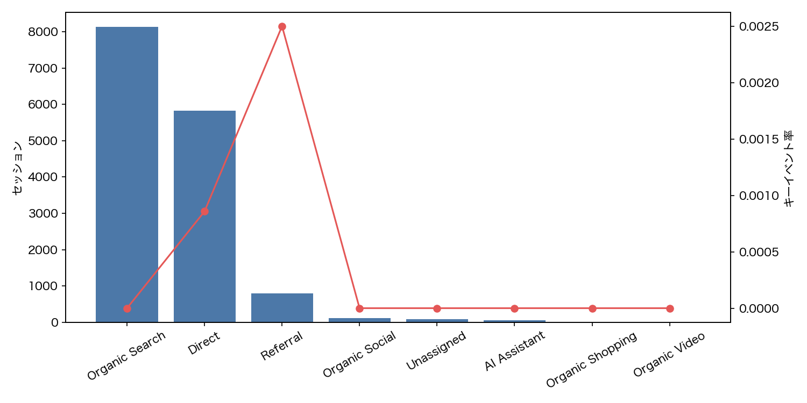
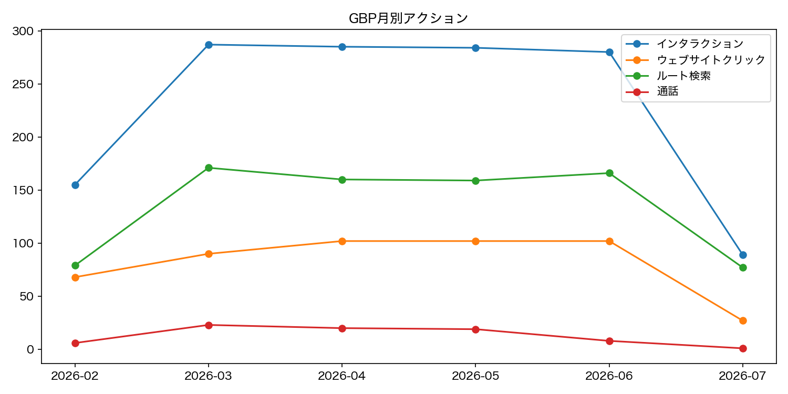
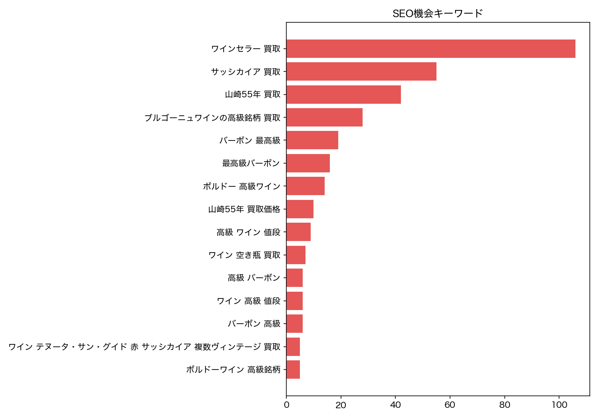
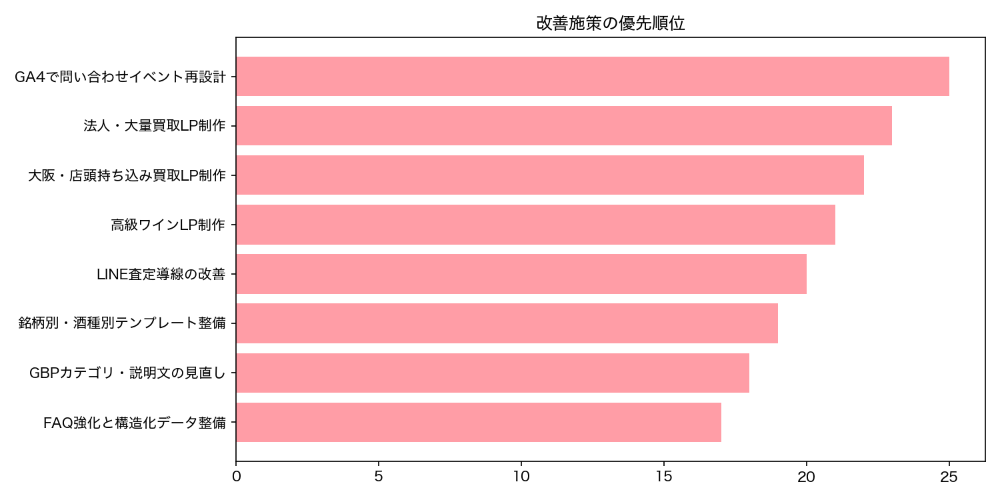

自然検索の基盤はある一方、勝ち筋テーマに寄せたLPと事例不足が機会損失になっています。
提出日: 2026年8月6日
検索で見つかるだけでなく、
検索で見つかるだけでなく、
高単価案件を選ばれる状態へ。
本レポートは、ザオウリカーのSEO、Googleビジネスプロフィール、AI回答時代の情報設計、 そしてLINE導線までを一体で整理し、今後3か月で優先すべき改善施策を明確化したものです。
812件
GBPルート検索
491件
GBPサイトクリック
4施策
短期優先アクション
Executive Summary
まず押さえるべき総括
今回の分析で重要なのは、問い合わせ件数の単純増ではなく、 「高い酒やワインセラーを安心して任せられる店」として認知を作れるかどうかです。
来店ニーズは強いものの、販売店寄り想起が混じっており、買取専門性の伝達に改善余地があります。
AIが比較・推薦しやすい情報構造やFAQ、専門性の明文化が不足しています。
問い合わせイベントはあるものの、正式CV定義とチャネル別評価が弱く、投資判断の精度が低い状態です。
本件の目的整理
ザオウリカーの次の一手は、幅広い一般語で総当たりすることではありません。 高単価案件に近いテーマを優先し、検索、マップ、LINE、AI回答まで含めて 「高額酒・まとめ売り・持ち込み相談に強い」印象を作ることが重要です。
現状の最大課題
- どの流入が正式な成果につながっているか、GA4上で十分に判定できない
- 高級ワイン、ワインセラー、法人大量買取など高利益テーマの受け皿ページが少ない
- GBP上で買取専門店としての理解が弱く、販売店寄り検索も混在している
Insights
主要インサイト
定量データと打ち合わせ議事録を突き合わせると、今伸ばすべきテーマは明確です。
Organic Searchが主力チャネル
自然検索経由の流入が最大であり、査定ページやLINE査定ページにも閲覧が集まっています。 つまり「売りたい需要」は既に存在しています。
大阪での持ち込み文脈が強い
ルート検索とサイトクリックが多いことから、近隣ユーザーは「持ち込みやすいか」「すぐ相談できるか」を重視しています。
ワイン系の伸びしろが大きい
打ち合わせでも、ワイン、ワインセラー、コレクター案件、まとめ売り文脈への関心が繰り返し確認されました。

流入チャネルの基礎体力
Organic Searchが主力であることを前提に、CV定義を正し、どの導線が成果を生んでいるか可視化する必要があります。

来店行動の強さ
マップ経由の行動が確認できるため、GBPは補助チャネルではなく、売上に直結する重要接点として扱うべきです。

狙うべきSEOテーマ
一般語よりも、高単価案件に近く、比較検討されやすいテーマを優先する方針が妥当です。

優先順位の整理
施策は点ではなく、計測、LP、GBP、LINE設計を連動させて進めることで成果確度が上がります。
Priority Actions
最優先で実施すべき施策
まずは「成果が見える状態」を作り、そのうえで高利益テーマの受け皿を整える順番が最も効率的です。
GA4の問い合わせ計測を再設計
form_submit、LINEクリック、電話クリックを正式CVとして定義し、チャネル別・ページ別に評価できる状態へ。
- 問い合わせ系イベントの棚卸し
- キーイベント設定の再定義
- 流入別・LP別レポートの整備
大阪・店頭持ち込み買取LPを制作
アクセス、駐車場、査定時間、予約可否、即日性を整理し、近隣持ち込みニーズを確実に受け止めます。
- 大阪持ち込み専用の訴求整理
- 持ち込み不安の解消FAQ追加
- GBPとの情報整合
高級ワイン・ワインセラー一括買取LP
高額売却、まとめ売り、コレクション整理の受け皿を作り、高単価案件への入口を増やします。
- 対象商材の明確化
- 査定観点、保管リスク、出張対応の記載
- LINE相談への導線強化
法人・飲食店・酒販店向け大量買取LP
在庫整理、閉店、移転、余剰在庫など大ロット案件を狙うページを用意し、案件単価を引き上げます。
- 法人案件の利用シーン整理
- 買取までの流れ、必要書類、対応範囲を可視化
- 実績や対応可能量の記載
Focus Themes
優先テーマの整理
「検索ボリュームが大きい」よりも、「利益が高い」「比較されやすい」「LINEに落とし込みやすい」を優先軸にします。
| テーマ | 狙う理由 | 必要コンテンツ | 主な導線 |
|---|---|---|---|
| 大阪 持ち込み買取 | マップ行動が強く、来店意欲の高い顕在層を獲得しやすい | アクセス、駐車場、査定時間、予約可否、当日対応 | GBP、検索、LINE |
| 高級ワイン買取 | 高単価案件に直結しやすく、専門性訴求とも相性が良い | 銘柄群、保存状態、査定観点、相場の考え方 | 検索、比較、LINE |
| ワインセラー整理・一括買取 | 複数本案件やコレクション整理需要を取り込みやすい | 一括査定の流れ、出張、保管・運搬、事例 | 検索、AI回答、LINE |
| 法人・飲食店在庫処分 | 大ロット案件につながりやすく、競合との差別化がしやすい | 閉店・移転・在庫整理の対応、必要書類、対応スピード | 検索、営業、紹介 |
LLMOはSEOの延長線上で整える
ChatGPT、Gemini、Google AI OverviewsなどのAI回答で引用・推薦されるには、 まず検索で評価される基盤が必要です。そのうえで、FAQ、比較軸、対応範囲、査定基準、 高単価案件の実績などをAIが理解しやすい形で言語化していくことが重要です。
GBP改善の方向性
- カテゴリ、説明文、サービス名を買取専門寄りに調整する
- 持ち込みしやすさが伝わる写真、投稿、Q&Aを増やす
- 口コミ返信でも「安心」「高額査定」「持ち込みしやすさ」を言語化する
Roadmap
90日ロードマップ
短期で成果把握の精度を上げ、中期で高単価案件向けの勝ち筋を増やす設計です。
計測と基礎整備
GA4のCV定義見直し、GBP改善、優先LPの要件定義、既存査定ページの導線点検を実施します。
高利益テーマの受け皿制作
大阪持ち込みLP、高級ワインLP、ワインセラーLP、法人向けLPを順次公開し、FAQも追加します。
比較勝ちとAI露出の強化
事例、比較コンテンツ、口コミ活用、LINE追客設計を進め、LLMO向け情報の構造化を強化します。
提出時の伝え方
- 「SEO診断」ではなく「高単価案件獲得のための集客再設計」として説明する
- LP制作だけでなく、計測とGBP改善をセットで提案する
- Lオクとの役割分担は今後の拡張論点として軽く触れる
補足
本レポートは既存データ、議事録、図表をもとに整理した提出用たたき台です。 数値の精査やクライアント向け表現の微修正を行えば、そのまま初回提案資料として使用できます。